Whole Park Circular
Best car park: Woods Car Park
If you're looking for an easy, scenic dog walk with plenty of variety, Danbury Country Park is hard to beat. Historic lakes, ancient woodland, colourful gardens and open meadows all sit within 45 acres of beautifully maintained parkland, making it one of the best all-round walks in Essex for every season.
Local tip: Visit in late spring or early summer to see the formal gardens in full bloom, then cool off beneath the ancient woodland canopy on the quieter woodland trails.
Honest ratings, so you can decide in seconds whether it suits your dog.
How we rate this
How we rate this
How we rate this
How we rate this
How we rate this
How we rate this
How we rate this
How we rate this
See what it actually looks like before you go.

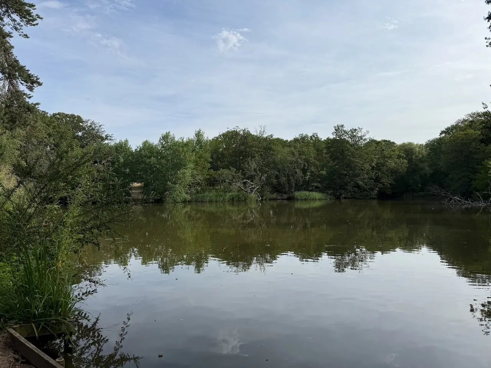
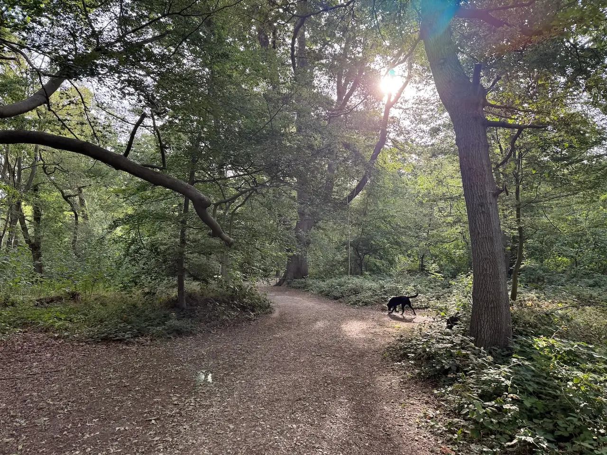
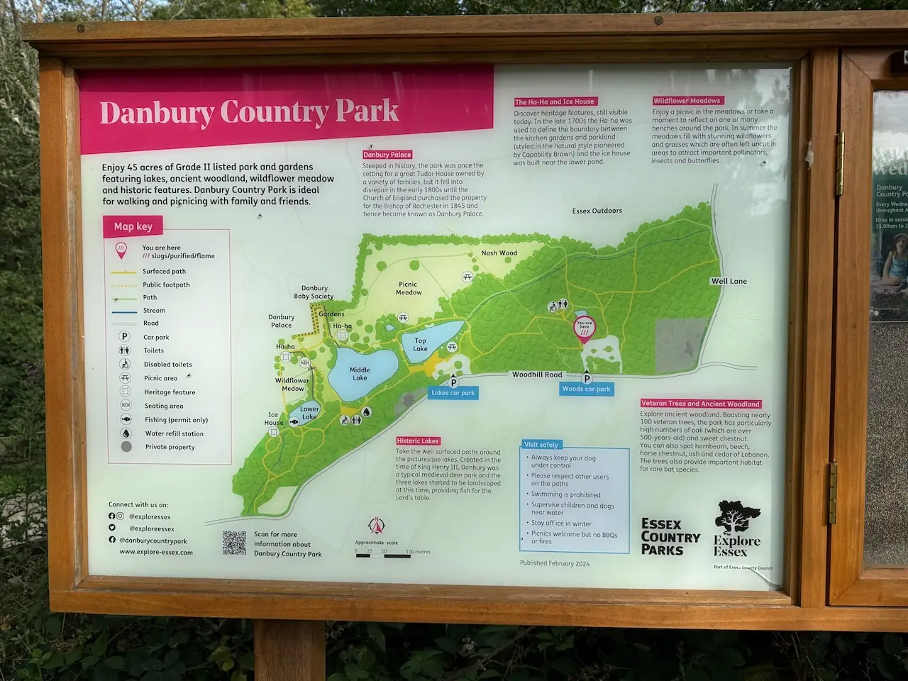
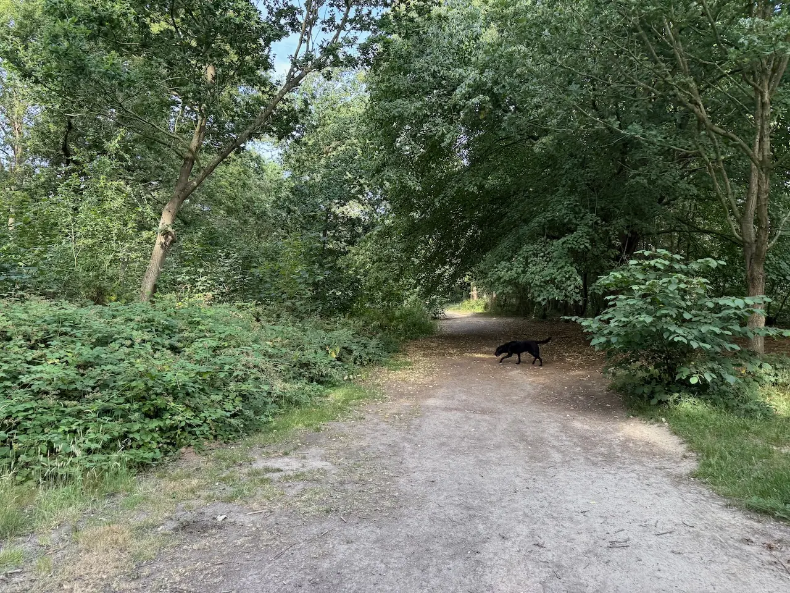
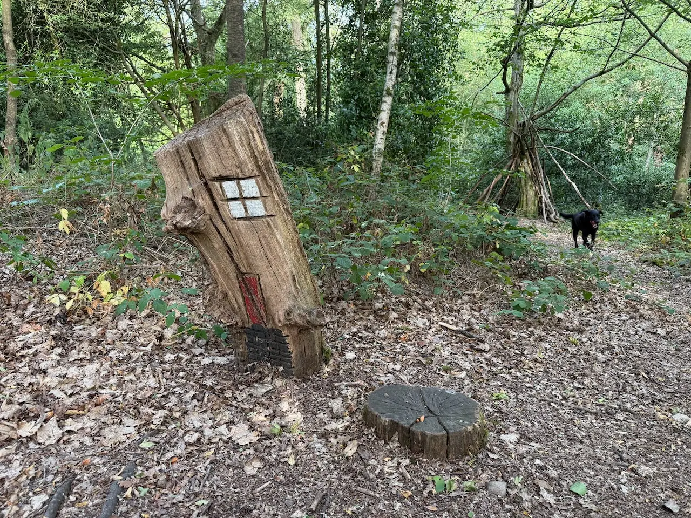
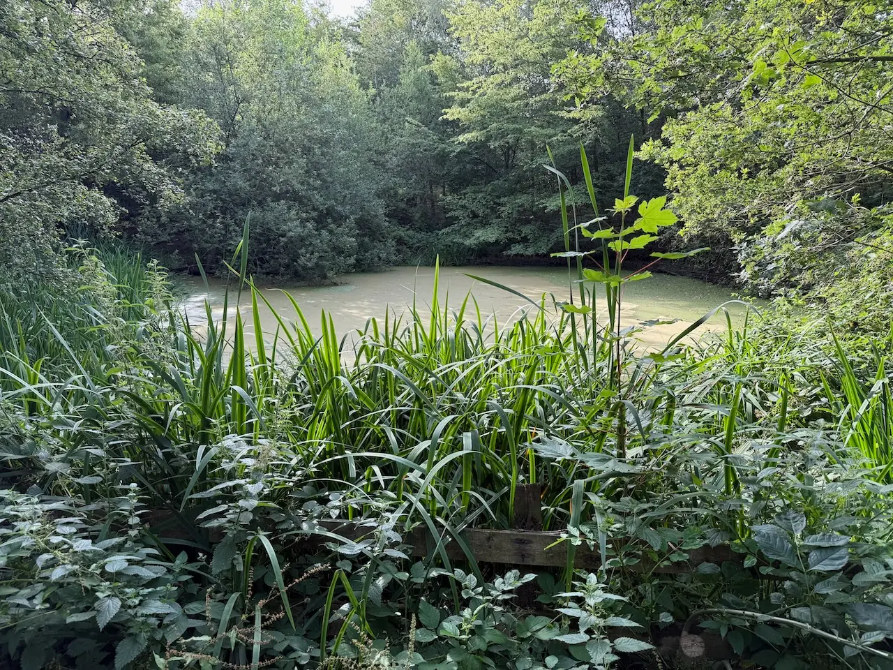
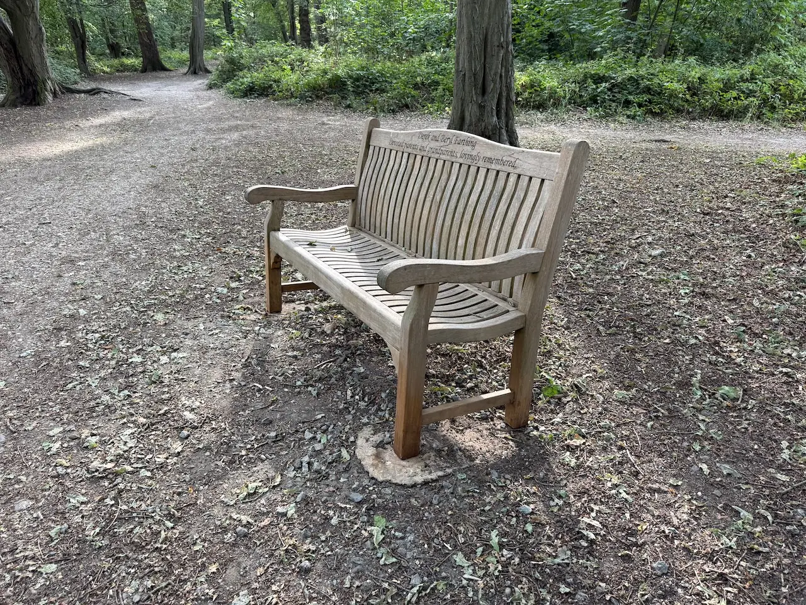
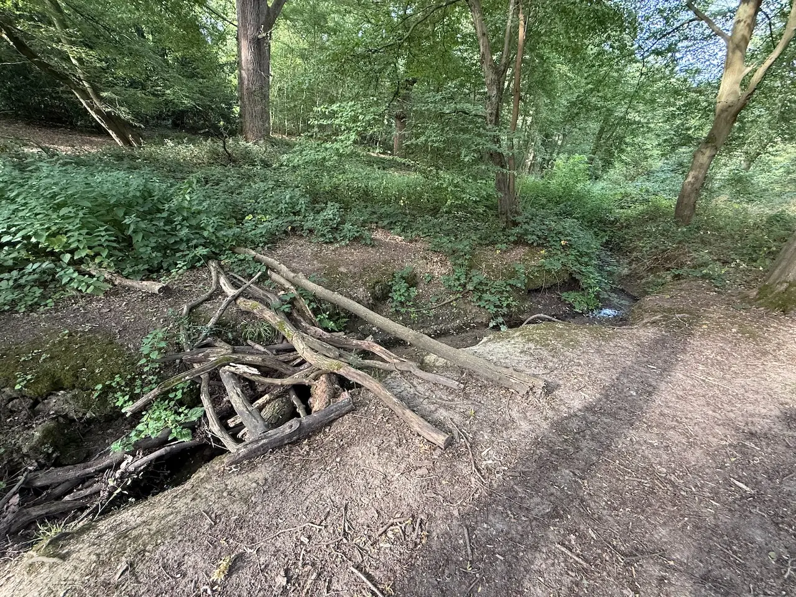
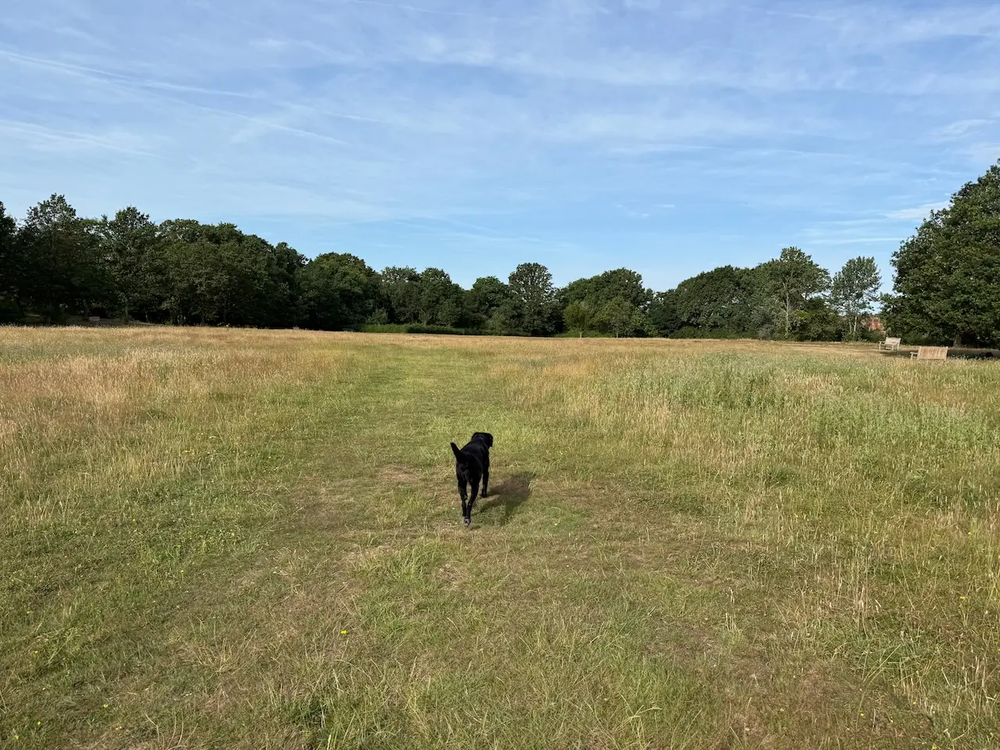
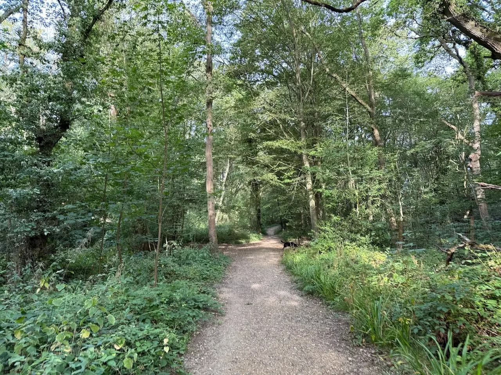
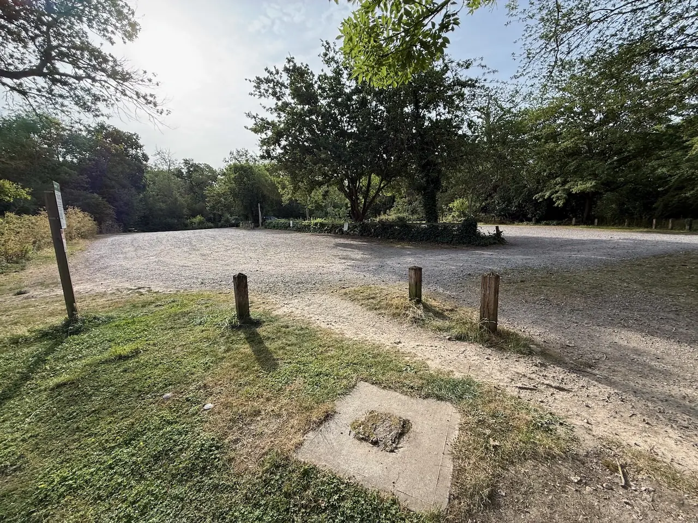
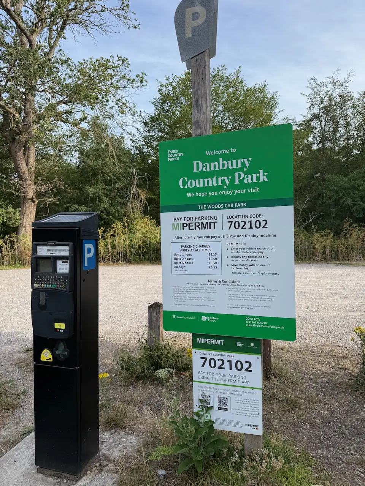
Best car park: Woods Car Park
Best car park: Lakes Car Park
Best car park: Lakes Car Park
Already heading to Danbury? These are the best nearby dog-friendly places to visit before or after your walk.
Traditional village pub overlooking Danbury Common, serving classic pub food, real ales and Sunday lunches.
Cosy village café serving locally roasted coffee, homemade cakes, brunch and lunch.
Traditional country pub with a large garden, classic pub food and popular Sunday roasts.
Dog-friendly café within Hylands Estate serving coffee, cakes and light lunches after your walk.
A charming tea room serving hearty breakfasts, homemade lunches and signature afternoon teas, with beautifully themed rooms and a dog-friendly courtyard.
A family-friendly quayside pub serving freshly cooked food and real ales, with a large waterside patio overlooking the Blackwater Estuary.
A charming country pub with a scenic beer garden, hearty Sunday roasts and easy access to the surrounding Essex countryside.
A welcoming village pub serving freshly prepared food, seasonal specials and renowned Sunday roasts.
A welcoming country pub with great food, outdoor seating and a dog-friendly atmosphere year-round.
Award-winning gastro pub with a large enclosed beer garden, real ales and a welcoming traditional atmosphere.
Other dog-friendly walks within easy reach of Danbury Country Park.
From local dog owners who've walked it.
★ This walk doesn't have any community tips yet.
Know something that would help another dog owner?
We'd love your help keeping Dogs of Essex accurate and up to date.
Managed by Essex County Council.